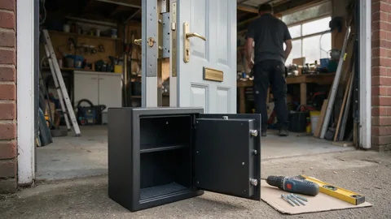
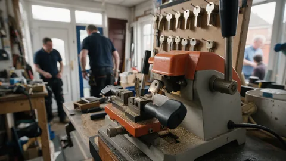

Keys cut properly
A key is cut from a blank on a machine, and the two things that matter are the right blank and a clean cut. A key that nearly fits is worse than no key at all, because it will work four times and then jam in the lock at the worst possible moment, and the lock will be the thing that suffers.
So every key we cut gets tried in the lock it is for before it leaves, and if the original is so worn that copies off it come out poor, we will say so. On a worn original the honest answer is sometimes a new cylinder with a fresh set of keys rather than four more bad copies.
Safes: it is mostly about where
People choose a safe and then look for somewhere to put it. It works better the other way round. A small safe bolted properly into solid concrete in an out of the way place does more than a bigger one stood in a wardrobe where anybody looking would look first.
So we talk about the floor or the wall before we talk about the box. Four bolts into solid concrete, not into screed or a floorboard. Out of sight, not in the obvious corner. And somewhere you can actually get at it, because a safe you cannot reach is a safe that stays empty.
What goes in one
Papers, spare keys, a bit of jewellery, the things that are a nuisance to replace rather than the things that are worth the most. That is what domestic safes are for, and it is worth being realistic rather than thinking of it as a strong room.
Locked out of your own safe
It happens, usually after a death in the family or a house move, and it is a different sort of job. Sometimes it opens and sometimes it has to be drilled, and we will not know which until it is in front of us. Say what you know about it when you ring, including whether anybody has already had a go at it.
Generated for this demo. Not a photograph of a real job.
On the day
How this one usually goes.
- The original gets looked at firstA worn original makes poor copies. Better to say that up front than hand over four keys that will let you down.
- Right blank, clean cutMatched to the lock rather than to whatever is nearest on the board, and cut in one go rather than fettled afterwards.
- Tried in the actual lockEvery new key turned in the lock it is for, both ways, before anybody leaves with it.
- For a safe, the floor before the boxWhere it goes, what is underneath, and whether four bolts will reach something solid. That is the real decision.
- Fitted, tested and explainedBolted down, opened and closed a few times, and a plain word about what to keep in it and what not to bother with.
A sample running order for this demo. Yours depends on what is on the door.
Questions
Asked about this job.
Can you cut a key while I wait?
Yes, that is the normal way of it. Bring the original and the lock it belongs to if it is something small like a padlock or a cabinet, and the key gets cut and tried there and then.
If the original is badly worn, expect us to say so. Copies of a worn key inherit the wear, and the first sign of trouble is usually a key stuck in a lock you cannot open.
Where should a safe go?
Somewhere unremarkable, bolted into something solid, and not the first place anybody would look. A built in wardrobe floor, a garage slab, under a fitted cupboard.
What we look at first is the floor or the wall, not the safe. Four bolts into concrete is what makes a small safe useful. A heavy one stood loose is just heavy.
What should I keep in it?
The awkward things rather than the expensive things. Passports, deeds, a spare set of keys, the jewellery you would be upset about, a bit of cash.
Domestic safes are about making things slow and difficult to take, not about being a bank vault. Anybody who tells you different is selling.
Can you open a safe if nobody knows the number?
Sometimes. It depends entirely on the safe and on whether anyone has already had a go at it, which usually makes it harder.
Tell us everything you know when you ring, including anything written on it and how old it is roughly. We will be honest about whether it is likely to open or likely to need drilling, and we will not pretend to know before we have seen it.
General trade knowledge written for this demo, not advice on your door.
Our work
Sample jobs like this.

Generated photoSafe fitted in a garageSale · sample
Generated photoKeys cut while you waitEccles · sample Generated photoWindow locks downstairsSwinton · sample
Generated photoWindow locks downstairsSwinton · sample Generated photoCylinders changed on moving daySwinton · sample
Generated photoCylinders changed on moving daySwinton · sampleMade up samples with generated pictures. Tap one for the detail.
Also
The other things we do.
Emergency lockouts
Shut out of your own house, keys lost or snapped off in the lock. Opened without damage wherever we can, and a straight word first if we cannot.
More →Lock changes and upgrades
New cylinders, new mortice locks, new keys. The usual reasons are moving in, losing a set, or a lock that has got stiff enough to worry you.
More →uPVC door lock and mechanism repairs
The door you have to lift and lean on to lock. Usually the gearbox, the alignment or the cylinder, and all three are a repair rather than a new door.
More →Lock repairs after a break in
Secure tonight first, then put right properly: the lock, the keeps, the frame. Boarding up where a door or window will not shut.
More →Window locks
Key operated window locks, handles and the strips inside the frame. The cheapest part of a house to secure and the one most often left.
More →Shall we come and look?
Tell us which door it is and your postcode and we will book someone in. If you are locked out right now, use the urgent line instead.